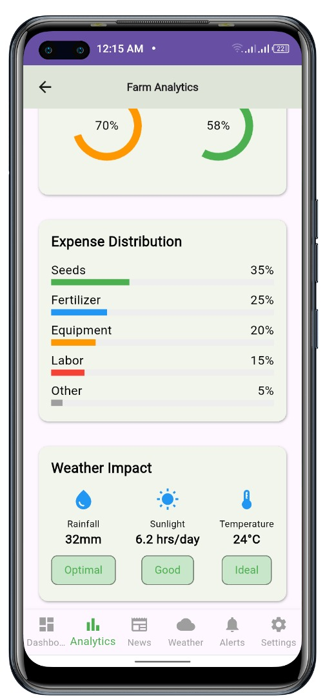

FarmerAI - The Solution
This mobile app for Ugandan farmers uses Flutter for the front-end, Firebase for the backend, and AI/ML for smart forecasting.
Key Features
- AI Market Prediction: Forecasts future crop prices, optimal planting/harvesting times, and regional demand using historical and real-time data.
- Localized News: Aggregates and summarizes relevant agriculture news from government portals, trade reports, weather updates, and journals.
- Personalized Crop Dashboard: Farmers select their crops and receive tailored insights on planting times, selling suggestions, and price predictions.
- Push Notifications: Alerts on sudden market changes and important government announcements.
- AI & Data Engine: Uses datasets from UBOS, FAO, World Bank; applies time series forecasting (Prophet, LSTM), NLP for news, and classification models for alerts.

Credits: Makerere University